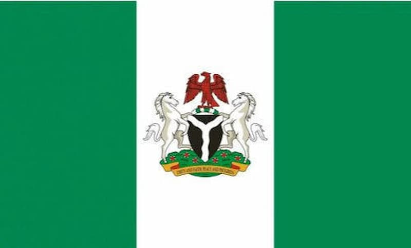

Anierobi Wealth Chioma
About Me
My name is Anierobi Wealth Chioma, I was born in Eastern part of Nigeria and I am a passionate web developer with a strong interest in creating dynamic and user-friendly web applications. I have experience in HTML, CSS, JavaScript, and responsive design, and I enjoy learning new technologies to enhance my skills. In my free time, I like to explore new programming languages, work on personal projects, and contribute to open-source communities.
My Country

Nigeria is the most populous country in Africa, with more than 200 million people representing over 250 ethnic groups and languages. Located in West Africa, it is known for its rich cultural diversity, vibrant music, delicious cuisine, and strong entrepreneurial spirit. Nigeria is home to famous landmarks such as Zuma Rock, Olumo Rock, and Yankari National Park. The country is also one of Africa's largest economies and is often called the "Giant of Africa" because of its population, economy, and influence across the continent.